TL;DR Image
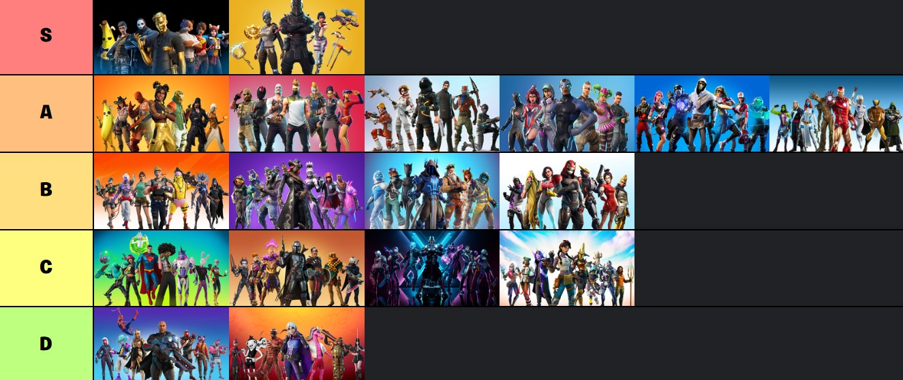


Preamble: I started playing the game this season, I can't remember how exactly I was introduced to it, but I do remember having to ask my mother for an xbox live gift card to play it. Everything abuot the game was so novel to me (I was 12 at the time), as I had never played a battle royale game before. Throughout the whole season I pretty much only solo qeued. I didn't like to burden myself with having to communicate with annoying teamates, and plus, I was playing with TV audio so my parents would hear everything which my TMs would say. Given that I had only played single player games up to this point in my life, Fortnite was super intense and stressed me out a lot, to the point that my hands would start trembiling when I made it to top 25, and at top 10 I would've broken out into a cold sweat. I think that intensity is what got me addicted to it. My stragedy was to land at secluded areas and camp until top 2, and then try to use the element of suprise to kill the last guy. I never ended up getting a Vic Roy in season 2 :(
The season itself was was amoung the best. The loot pool was minimalistic, the UI was nice (unlike what it is now), the new battle pass thing was cool, Tilted Towers update added a whole bunch of new POIs, and the Chirstmas update we got midway through the season was memorable. It's hard to give this season a rating because even though on paper it's on par with the later seasons, it was a pioneer, so I think it deserves special treatment. S tier.
Season representetive photo:
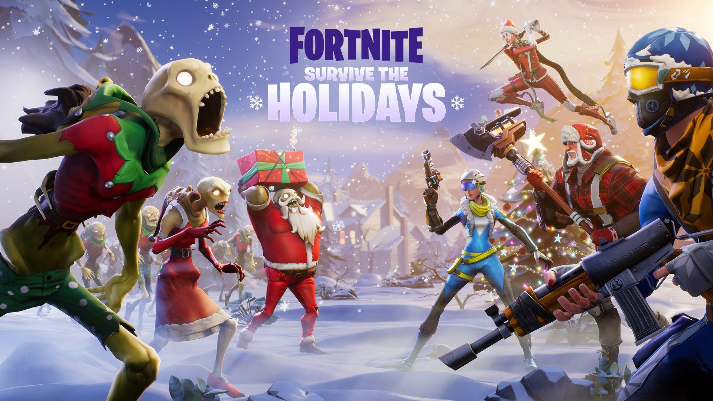
S3 basically just took the success of season 2 and ran with it, improving upon some smaller aspects. This time the battle pass was a lot bigger having 100 tiers. New wacky guns were added, namely the Deagle, LMG, Heavy Shotgun, Supressed SMG, ... amoung suprisingly many more than I recall. The addition of a storyline integrated into the season was also a great idea. The storyline was original and exclusively fortnite-related (unlike what we have now). It led to a beutiful build up for the end of season event and start of season 4. A tier.
Season representetive photo:
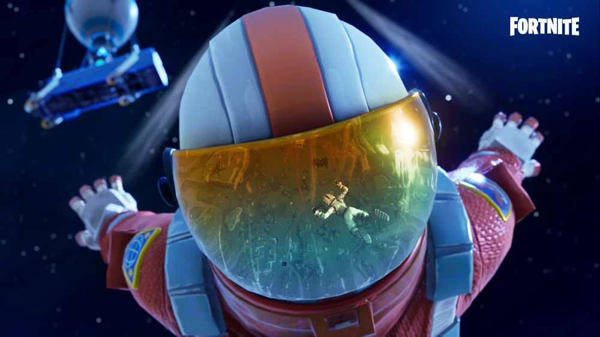
S4 was great storyline wise. The map also saw it's first substantial change since the tilted towers update all the way back in season 2. The map change included Dusty Divot. Loot wise it was terrible, but it was very aesthetic, especially when the trees started to grow inside of the divot closer to the end of the season. There were also a few new wacky traps and guns added, I think the bounce pad was one of them. The hop rock effect was also an interesting addition. Overall pretty good season much like S3, A tier.
Season representetive photo:
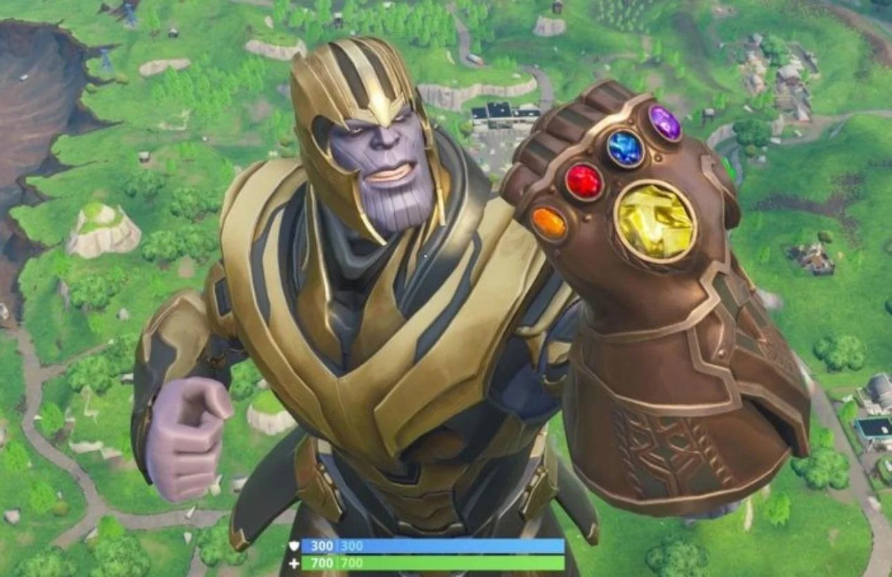
To be 100% honest my xbox live ran out during this period, so I had to wait untill christmas to ask my mother for another xbox card, unfortunately that meant missing out on these two seasons. Although I didn't play them, I watched enough videos to be able to form my own opinion of them. Season 5 had the addition of the desert south east corner of the map and rifts (most notably). These two alone plus the fact that the pump shotgun remained in the game is enough for me to call it a A tier season. I have a slightly different opinion of season 6 though. I do belive that season 6 was one of the most aesthetic seasons of all time (especially because of the floating island in the middle of loot lake); however, the aesthetic isn't enough to carry it to A tier, I think there were many scenarios where the husk spawners could be a nuisance, like when you're fighting an enemy around one. B tier.
Season representetive photo:
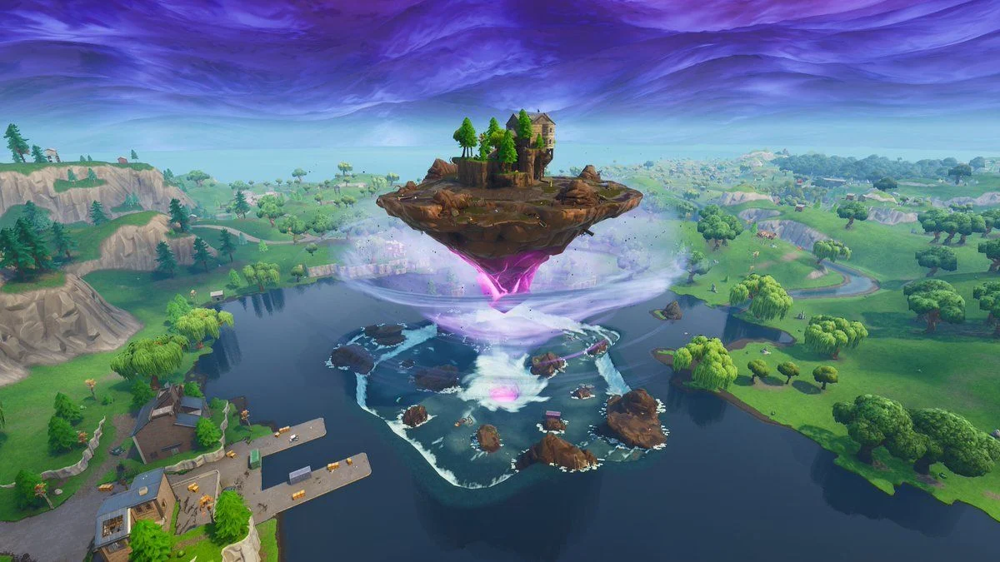
You really can't screw up a Christmas themed season. The new POI's were good, but my favorite part was how the map progressively got more and more covered by snow. The new battle bus theme was also a detail I appreciated. The loot pool and new places vehicle however weren't my favorite. B Tier.
Season representetive photo:
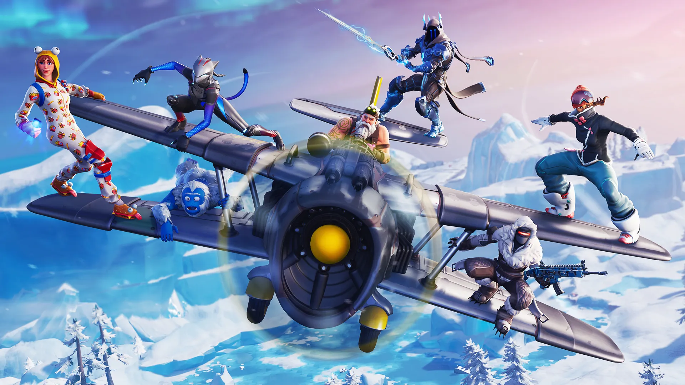
My opinion of this season may be bias because of how much I loved the pirate theme. The storyline of this season was one of the best. The map for this season was also incredible, I loved how it was alsomost like each quadrant of the map had a different biome. The ghisers and cannons were nice mobility. Easily A tier.
Season representetive photo:
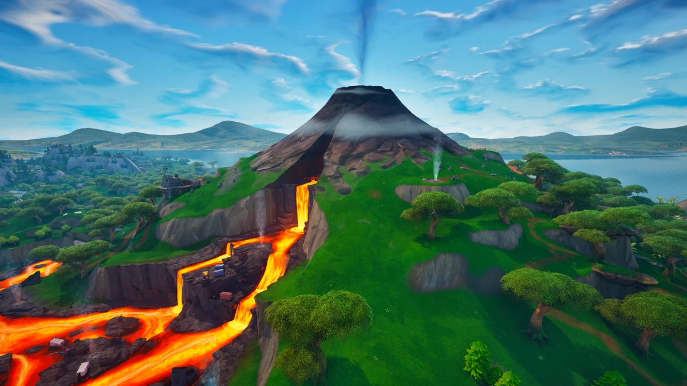
Although the loot pool was absolutely horrid this season, the futuristic theme made up for it. Neo tilted was a welcome change after having tilted towers go untouched season after season, the slipstreams provided insane mobility (too much perhaps). And I also found those floating mega drones where you could land on and get decent loot also pretty cool. Overall, the season wasn't all that great gameplay wise but the aesthetic was too good to ignore, much like season 6. B Tier.
Season representetive photo:

Cool map, the mechs were too much to bear though. C Tier.
Season representetive photo:
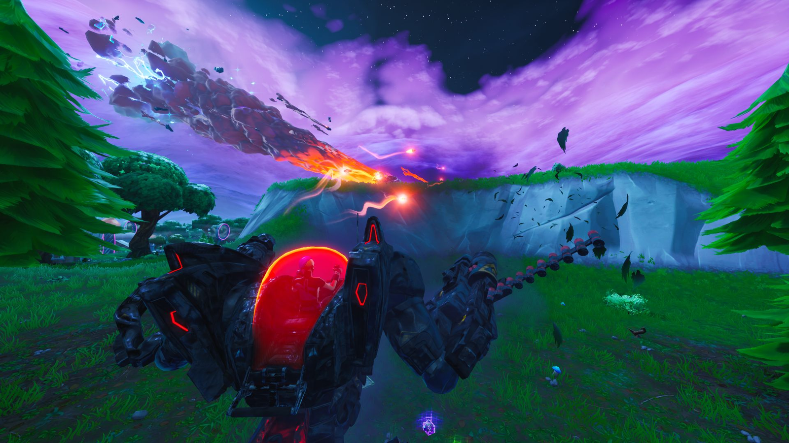
My take of this season might be bias because this was my first season on my new PC. And so I was no longer playing KBM on console which allowed me to instantly improve a ton. Irrespective of that however, I loved the simplicity of the game. It was certainly refreshing after the chaos that Season X had been. The loot pool was perfect, the map was perfect, the graphics were aesthetic as fuck and nothing seemed out of place. It just felt like a refreshed version of season 2. A tier
Season representetive photo:
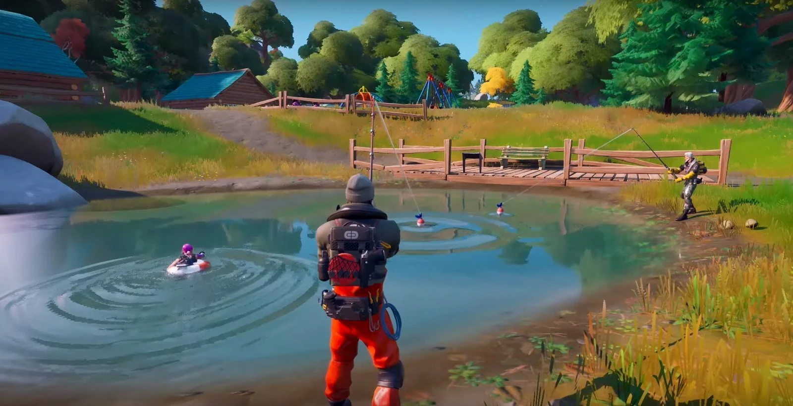
My favorite season of all time. It took the bland perfection that the season before was and spiced it up with vaults, bosses, and their mythic weapons. The mythic weapons weren't stupid either like the infinity blade or thanos' gauntlet, they were just buffed versions of guns already in the base loot pool, usually with special effects too. And there wasn't only 1 boss you could get a mythic from, there were 7 bosses (some ghost, some shadow) scattered around the edges of the map. This helped reduce the issue of half the lobby landing at 1 POI for a special weapon, like the infinity blade. The storyline of ghost and shadow was also quite cool and heavily encorporated into the gameplay with henchmen amoung other things. S tier.
Season representetive photo:
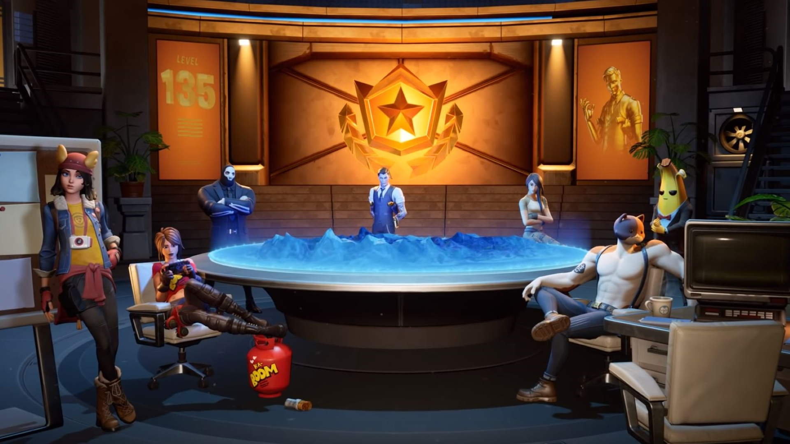
The loot pool this season was what sucked about it the most. It was all because they vaulted the pump shotgun and the only shotguns left to replace it were the change shotgun and tac. I'm not going to explain how the change works but I will say that I didn't like it even after practicing with it in creative a lot. I found that it was good better for players with good awareness and high fps because they were able to time the shots the best. So I had to resort to using the tac, which wasn't a satisfiing replacement at all. The map was cool at first but it got boring after a week or 2. What saved this season from being at a lower tier is how the game was constantly being updated to change the level of water. That was somewhat cool, and Coral Castle was a cool POI which emerged when the water levels dropeed. C Tier.
Season representetive photo:
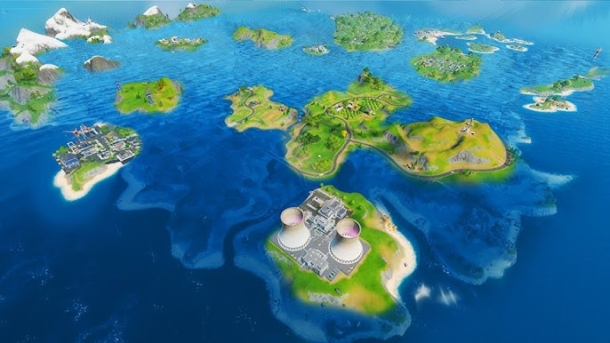
The loot pool this season was perfection. No op SMGs, pump was readded, and the Stark industries Energy rifle was balanced but op if you had good aim. The map was only slightly different from chapter 2 season 2, so it was overall a good map too. Gameplay alone, this would have to be my favorite season. Where is falls short though is in it's storyline. I wasn't a huge fan of them adding collaborations to the Battle Royale lore, I thought it was silly. Unfortumately this season was only the start of Fortnite becoming collaboration hell. So because of that rather than putting this season in S, it's going in A.
Season representetive photo:

They removed the pump shotgun again REEEEEEEEE. Re-added OP SMGs REEEEEEEEEEEEEEEEE. Without a doubt the shittiest season loot pool wise. The only thing keeping this season from being dumped into D tier is the fact that the map was still decent and the story line was ok. C Tier.
Season representetive photo:
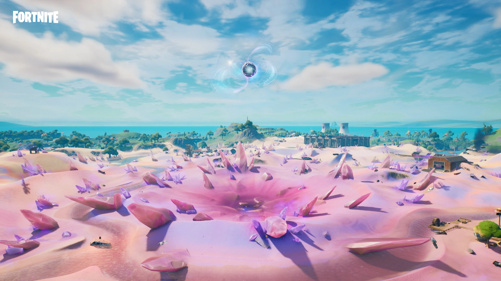
Increadibly unique season. New currecy was bones if I remember correctly, and these bones could be used to upgrade makeshift weapons - of which, the AR was actually decent because of it's high DPS. Storyline was again ok. New bow weapons were also added that had different moddifers on them, I enjoyed using them a decent bit. The map was alright. low B tier.
Season representetive photo:
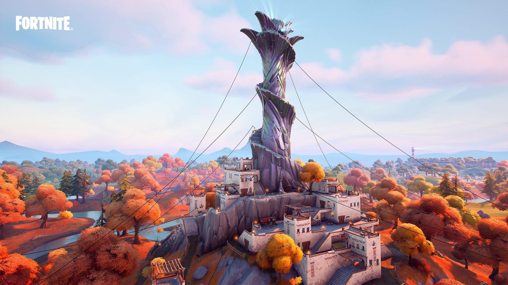
Some "cool" new weapons were added which I wasn't a huge fan of. But, the biggest upset for me this season was the addition of the Saucers. They were too strong, just as OP if not more than the Mechs from season X. The storyline this season was also absolute garbage. The only reason this season isn't in D tier is because the pump remained in the game and the map was still chapter 2 season 2 esque. C tier.
Season representetive photo:
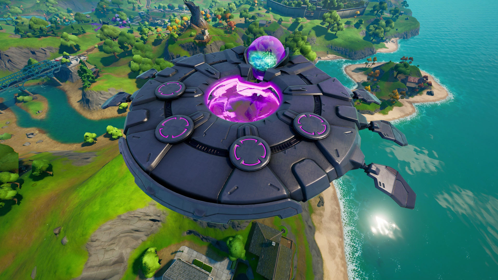
Didn't even bother following the storyline at this point because I felt like it was beyond salvagable from last season. The map was literally the same shit as last season, except now the map was peppered with crash landed Saucers. Very strange loot pool, I'm not sure most comp players hated this season. Weird BP characters and bad events all around. D tier.
Season representetive photo:

Welp, pumps not in the loot pool anymore. Loot pool is overall pretty crappy and incentivces spray. Not a fan of house a collaboration character is revealed to be a central figure in the Fortnite lore. Map was actually pretty decent, but still not enough to save this season from D tier.
Season representetive photo:
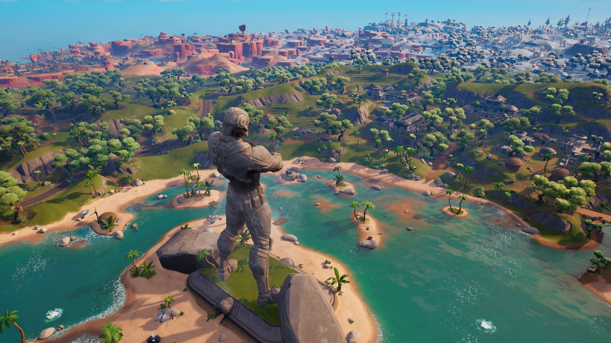